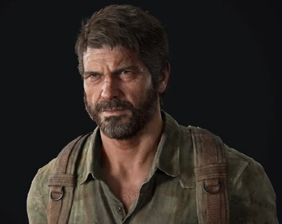

ProtagonistaJoel Miller
Um sobrevivente endurecido pela perda de sua filha Sarah no início do surto. Joel é um contrabandista que vive na zona de quarentena de Boston. Sua jornada com Ellie o força a confrontar seu passado traumático e redescobrir sua humanidade.